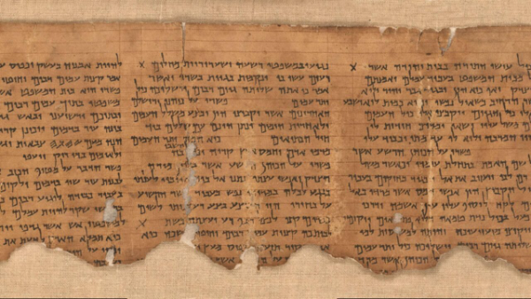

Desenterre os Tesouros Escondidos
Explore as descobertas arqueológicas que confirmam e enriquecem a narrativa bíblica, revelando cidades, artefatos e costumes do passado.

Cidade de Silo
Evidências da antiga cidade de Silo, onde a Arca da Aliança foi guardada por muitos anos.
Veja fotos

Manuscritos do Mar Morto
Textos antigos que lançam luz sobre a história e a cultura do período bíblico.
Saiba mais